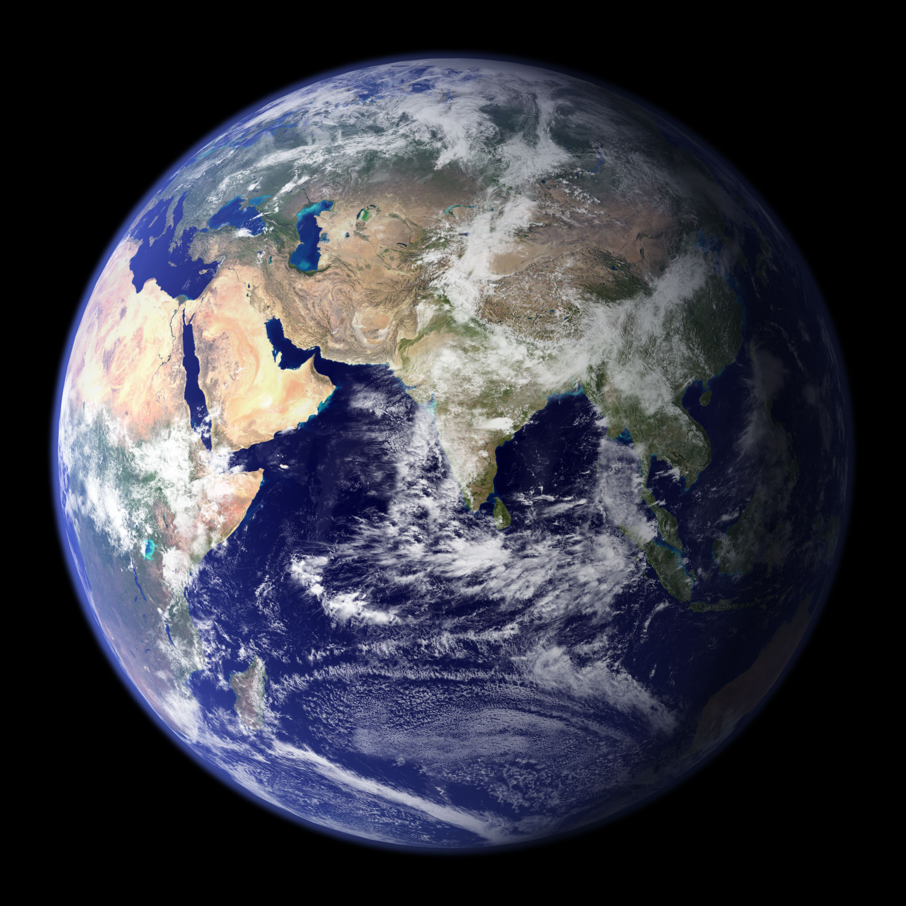

Země je třetí planeta od Slunce a jediná známá planeta, kde existuje život. Její povrch tvoří kontinenty a oceány a její atmosféra umožňuje stabilní podmínky pro organismy.
Povrch Země je velmi rozmanitý – hory, pouště, oceány a ledovce. Tektonické desky se neustále pohybují, což způsobuje zemětřesení a vznik pohoří.
Atmosféra obsahuje hlavně dusík a kyslík. Chrání planetu před škodlivým zářením a udržuje teplotu vhodnou pro život.
Země má jeden měsíc, rotuje za 24 hodin a oběhne Slunce za 365 dní. Je to jediná planeta se známým životem.

Země obíhá kolem Slunce po eliptické dráze ve vzdálenosti přibližně 150 milionů kilometrů.
Země se otáčí kolem své osy přibližně za 24 hodin, což způsobuje střídání dne a noci.